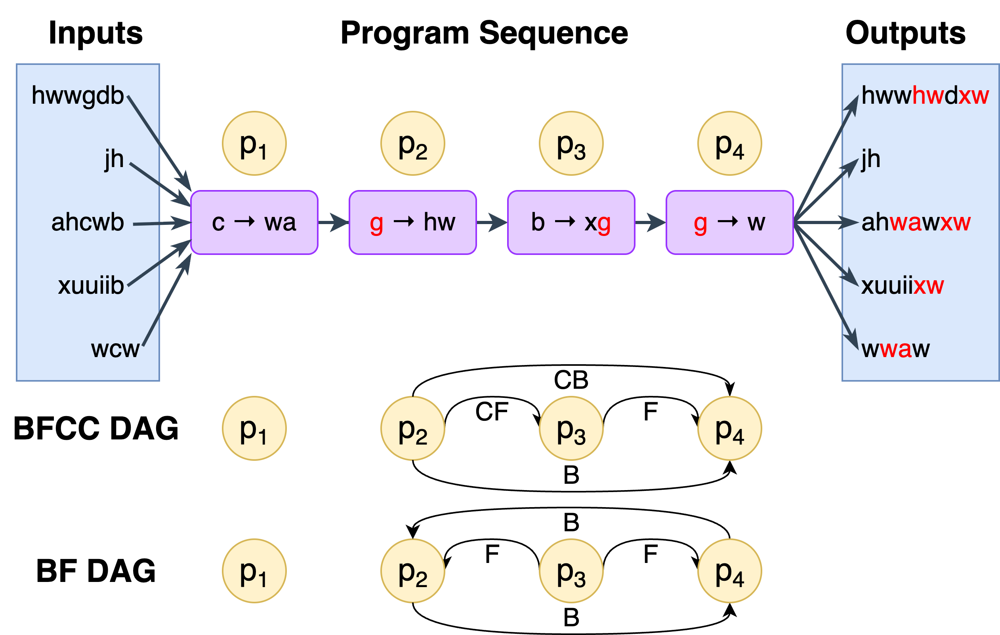

PBEBench: A Multi-Step Programming by Examples Reasoning Benchmark inspired by Historical Linguistics
1Carnegie Mellon University · 2Ohio State University · 3Independent Researcher
1Carnegie Mellon University · 2Ohio State University · 3Independent Researcher
PBEBench is a benchmark for multi-step inductive reasoning, inspired by
sound law induction in historical linguistics and framed as a Programming by Examples problem.
Given a set of input–output string pairs, an LLM must induce a cascade of string rewrite programs
(Python replace calls) that transforms every input into its target output.
Instances are generated by a symbolic problem proposer that samples input strings and program cascades, applies the cascade to produce the outputs, and records the interactions between programs. Because new instances can be generated at will, the benchmark is resistant to data contamination and saturation, and it is knowledge-free: no specialized background knowledge is needed.
Difficulty is controlled along two dimensions: the cascade length (number of programs) and the types of ordering relations (BFCC relations) between programs. Rejection sampling balances instances across cascade lengths and across all 16 combinations of relation types.

In historical linguistics, explaining how ancestral word forms evolve into modern ones requires positing an ordered sequence of sound changes. The order is critical: applying a change too early or too late can remove the conditions that other changes depend on. Viewed abstractly, sound law induction is a Programming by Examples task whose difficulty comes not from individual rewrites but from composing sequences of interacting transformations. PBEBench captures this structure in a simple, formally specified problem space, and its scores are more predictive of performance on real sound law induction than other inductive reasoning benchmarks such as CLUTRR and SLR-Bench.
The central challenge in PBEBench is reasoning about rule ordering interactions. When two rewrite rules A and B can both apply to a string, their relative order can matter. These interactions are classified into four BFCC types:
Rule A creates the context for Rule B to apply. Applying A before B allows B to fire on more strings.
Rule A removes the context that Rule B would require. Applying A before B prevents B from firing on those strings.
Rule B is applied before A, even though A could have fed B. The order chosen counteracts a potential feeding relationship.
Rule B is applied before A, even though A could have bled B. The order preserves applications that would otherwise be blocked.
PBEBench instances are synthesized automatically: inputs are random strings and programs are randomly sampled rewrite rules, with provably correct symbolic detectors classifying the BFCC relations between them. Rather than relying on a fixed test set, the generator can produce new benchmark snapshots on demand, and its controllable difficulty means harder instances can always be generated as models improve.
Evaluating 23 models on multi-step PBE over PBEBench-Lite (Pass@1, Edit Sim, Valid Rate, Complexity) and program reordering over PBEBench-Lite-Perm (Acc, UAcc). Click any column header to sort.
| # | Model | Type | Pass@1 ↓ | Edit Sim | Valid Rate | Complexity | Reorder Acc | Reorder UAcc |
|---|---|---|---|---|---|---|---|---|
| Loading leaderboard… | ||||||||
Claude-4-Opus (Thinking) was evaluated on 20% of PBEBench-Lite due to API costs. Claude-3.5-Sonnet, Claude-3.7-Sonnet, and Claude-4-Opus were not run on program reordering (deprecation and budget), so Claude-4.5-Sonnet was evaluated on that task instead.
Solve rate: fraction of problems where executing the predicted program cascade on the inputs reproduces every ground-truth output exactly.
Normalized edit similarity between the predicted and ground-truth outputs, based on Levenshtein distance summed over the output strings. Negative values mean the predictions are further from the targets than the unchanged inputs.
Proportion of generated programs that are valid, i.e. satisfy all constraints specified in the prompt.
Total length of the find and replace substrings in the predicted program cascade, averaged across problems. Ground-truth programs average 11.63.
Program reordering accuracy: fraction of problems where applying the predicted permutation to the shuffled programs recovers the original outputs.
Unique accuracy: reordering accuracy on the 242 PBEBench-Lite-Perm instances that have a single valid program order.
Performance of gpt-oss-120b on PBEBench across cascade lengths 2–20, with sampling budget 32 and max sequence length 16,384. Pass@1 drops sharply as cascades get longer, falling to roughly 50% at length 15 and 5% at length 20.
| Cascade Length | First Code Block | Last Code Block |
|---|---|---|
| 2 | 100.00% | 100.00% |
| 3 | 100.00% | 100.00% |
| 4 | 96.88% | 96.88% |
| 5 | 100.00% | 100.00% |
| 6 | 96.88% | 96.88% |
| 7 | 96.88% | 96.88% |
| 8 | 96.88% | 96.88% |
| 9 | 84.38% | 84.38% |
| 10 | 84.38% | 84.38% |
| 11 | 87.50% | 87.50% |
| 12 | 76.56% | 76.56% |
| 13 | 67.19% | 67.19% |
| 14 | 45.31% | 45.31% |
| 15 | 50.00% | 50.00% |
| 16 | 39.06% | 39.06% |
| 17 | 28.12% | 28.12% |
| 18 | 17.19% | 17.19% |
| 19 | 7.81% | 7.81% |
| 20 | 4.69% | 4.69% |
Pass@1 reported for both the first and last code block extracted from model output.
gpt-oss-120b performance with varying sampling budget, evaluated on the 64 PBEBench instances with ground-truth cascade length 10 and max sequence length 16,384.
| Sampling Budget | First Code Block | Last Code Block | Nulls | ||||
|---|---|---|---|---|---|---|---|
| Pass@1 | Edit Sim | Valid Rate | Pass@1 | Edit Sim | Valid Rate | ||
| 1 | 25.00% | 70.84% | 97.76% | 25.00% | 70.84% | 97.76% | 1 |
| 2 | 50.00% | 79.31% | 97.52% | 50.00% | 79.31% | 97.52% | 1 |
| 4 | 60.94% | 90.81% | 98.30% | 60.94% | 90.81% | 98.30% | 5 |
| 8 | 73.44% | 94.77% | 95.88% | 73.44% | 94.77% | 95.88% | 4 |
| 12 | 78.12% | 96.19% | 96.84% | 78.12% | 96.19% | 96.84% | 10 |
| 16 | 82.81% | 96.79% | 97.06% | 82.81% | 96.79% | 97.06% | 11 |
| 20 | 85.94% | 96.91% | 97.88% | 85.94% | 96.91% | 97.88% | 26 |
| 24 | 79.69% | 97.25% | 96.38% | 79.69% | 97.25% | 96.38% | 3 |
| 28 | 84.38% | 96.44% | 97.97% | 84.38% | 96.44% | 97.97% | 12 |
| 32 | 84.38% | 97.39% | 98.06% | 84.38% | 97.39% | 98.06% | 20 |
| 64 | 90.62% | 98.08% | 98.55% | 90.62% | 98.08% | 98.55% | 27 |
Caption: gpt-oss-120b performance with sampling budget for max sequence length of 16,384 on the 64 PBEBench instances with ground-truth cascade length 10. The Nulls column counts cases (out of Sampling Budget × 32) where the chain of thought fails to terminate within the max sequence length.
PBEBench is the harder, cascade-balanced dataset: 1,216 instances with 50 input–output examples per problem and 64 instances for each cascade length from 2 to 20.
🤗 changelinglab/PBEBenchPBEBench-Lite is the simpler, relation-type-balanced dataset: 1,008 instances with 5 input–output examples per problem, cascade lengths from 2 to 5, and 63 instances per relation-type category. It is used for the multi-step PBE leaderboard results, and the program reordering dataset (PBEBench-Lite-Perm, 919 instances) is derived from it.
🤗 changelinglab/PBEBench-LiteIf you use PBEBench in your research, please cite our paper:
@misc{naik2026pbebenchmultistepprogrammingexamples,
title={PBEBench: A Multi-Step Programming by Examples Reasoning Benchmark inspired by Historical Linguistics},
author={Naik, Atharva and Agrawal, Darsh and Prakam and Mathur, Yash and Kapadnis, Manav and An, Yuwei and Marr, Clayton and Rose, Carolyn and Mortensen, David},
year={2026},
eprint={2505.23126},
archivePrefix={arXiv},
primaryClass={cs.CL},
url={https://arxiv.org/abs/2505.23126}
}